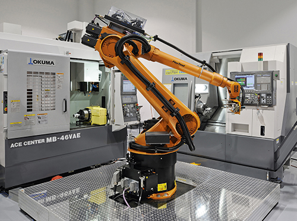

Funcionamiento: generalmente de los brazos robóticos es mediante la ejecución de un conjunto de lenguajes de programación que establecen las principales funciones, además de la incorporación de sensores que consolidan los objetivos de automatización para poder ejecutar las referencias por: fuerzas, aceleración, ...
Características de los robots industriales
•Cuentan con un brazo mecánico manipulable y controlable.
•Tienen elementos estructurales rígidos, como eslabones o enlaces.
•Se conectan por articulaciones que pueden ser lineales o rotatorias.
•Al final del brazo tienen “manipuladores” que pueden ser pinzas o herramientas.
PRECIOS: 320,000 pesos
 ir a pagina inico>